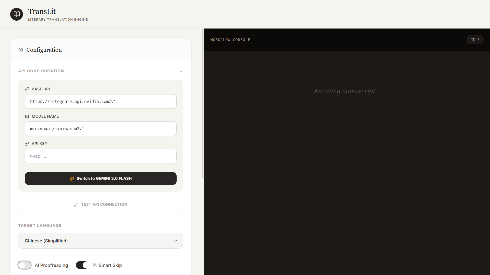
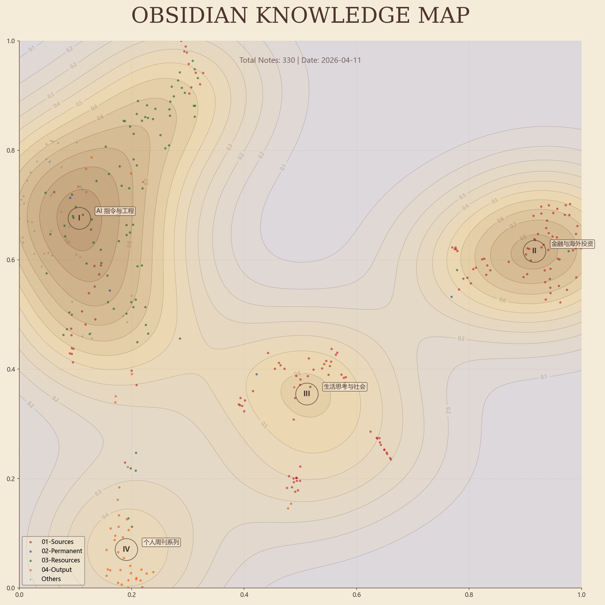
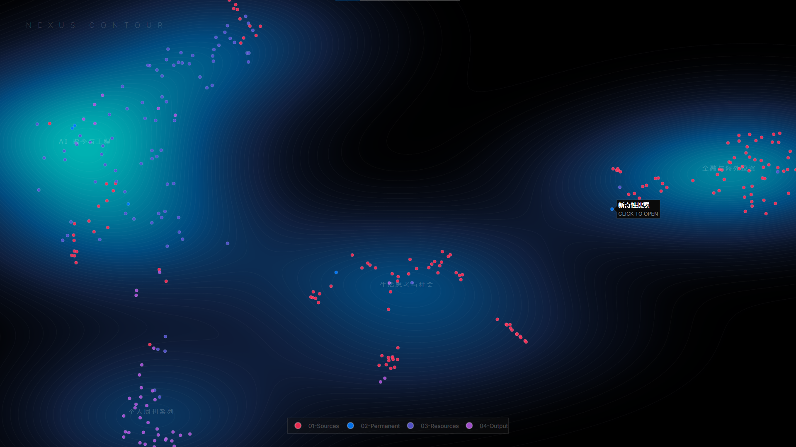
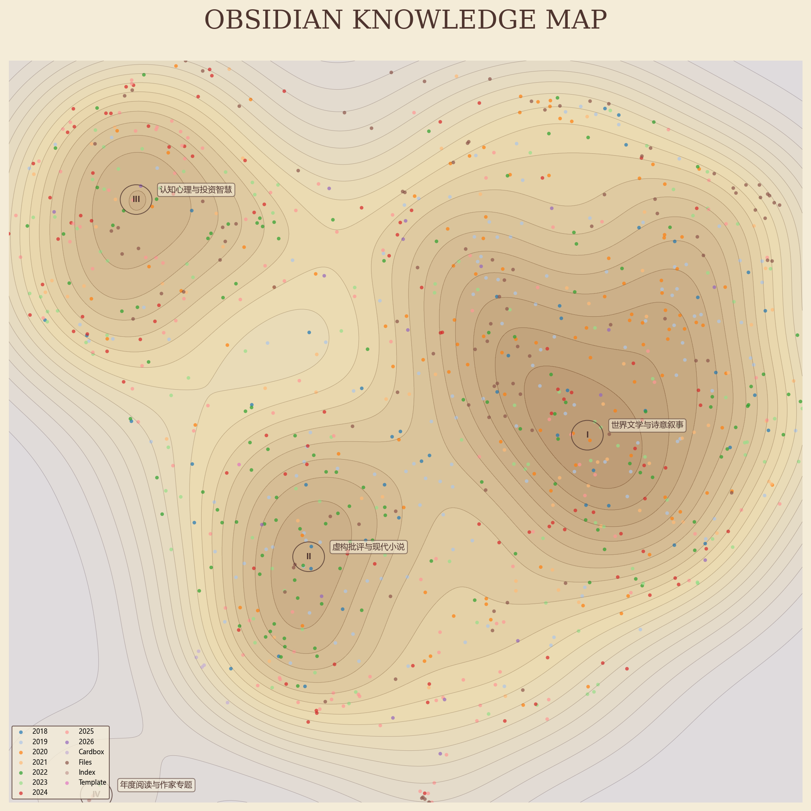
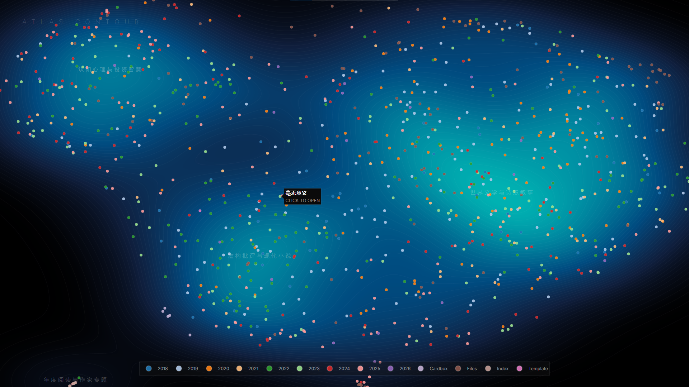

他们想在那一切不外是谜的地方找到答案。——帕斯卡尔
🌅 卷首语
“中文屋”是由美国哲学家约翰·塞尔（John Searle）在 1980 年提出的，旨在反驳“强人工智能”——只要为计算机编好程序，它就不仅是模拟人的心智，而是真的拥有思想和认知状态——这一论题。
实验场景如下：塞尔设想自己被关在一间屋子里，通过递纸条的方式与屋外的中文母语者笔谈。尽管塞尔完全不懂中文，但他拥有一本写满规则的“规则书”（英文写成），书中详细规定了针对各种输入的汉字组合应对应的输出汉字。通过查阅这本复杂的规则书，塞尔能给出逻辑通顺的回答，使屋外的人误以为他精通中文。
塞尔通过这个思想实验论证，即便计算机能够通过图灵测试，它也仅仅是在搬运符号（操纵语法/句法），而完全不理解这些符号背后的意义（语义）。在他看来，理解语言的意义是拥有智能的必要条件，因此，仅仅依靠程序运行的计算机在原则上是不可能具有真智能的，强人工智能无法实现。
我想到尤瓦尔·赫拉利在《智人之上》里写的（可能经过转述）：
在定义和评价 AI 时常常以“人类水准的智能”为指标，这就如同定义和评价飞机采用“鸟类水准的飞行”为指标一样不合理。AI 演化的目标并非达到人类水准的智能，而是一种完全不同类型的智能。
或许可以用这样一句话来终结讨论——AI 的智能不同于人的智能，AI 的理解不同于人的理解——我们不再理解“理解”。
事实上——读过原文才发觉，约翰·塞尔早已提到“不同的理解”是一种无效反驳，他认为“计算机的理解才不是部分的、不完整的，而是零”，所谓“理解”不过类似于“恒温器会感知温度的变化”。
再往后读，会发现约翰·塞尔讨论的对象是“程序实现的人工智能”，不同于当下由神经网络构成的大语言模型。
不过，“中文屋”并没有完全过时，可能这一句才是其关键所在：
认知不可能只是计算过程及其输出，因为计算过程及输出没有认知状态就能存在。
如无必要，勿增实体。如果只是“计算”，就不必出现“认知”。
但这是一个讲不清楚的道理，毋宁说是一种“信念”。
回到“中文屋”这个思想实验，比起谈论“强人工智能”能否实现，有另一种当代场景更值得细想：
设想你自己被关在一间屋子里，通过询问 AI 的方式与屋外的中文母语者笔谈。尽管完全不懂中文，但你拥有一台配置了本地大模型的电脑。通过询问 AI，你能给出逻辑通顺的回答，使屋外的人误以为你精通中文。
先把 AI 是否只是在“搬运符号”放在一边（喜欢谈“本质”的人会说“是”，“它只是一次添加一个词”），关注一下这位面壁者：AI 深度介入后的生活与工作，确实被改造成了“搬运符号”的“无意向状态”。
我几乎达到了这种境界，或落入了这种境地。
🐎 跑马场
🗝️ 猜谜
木岛佳苗对自己的外形有清醒的认知，所以不会轻易与男性见面，她要让这些男人在看到自己前先爱上自己。
——李淼《李淼罪案故事》
事实上，这些信对她而言只是一种消遣，用来维持炭火不灭，但不必把手伸到火中，而弗洛伦蒂诺·阿里萨却在信中的每一行里把自己燃烧殆尽。他渴望用自己的狂热感染她，用大头针在山茶花的花瓣上为她刻下微型诗句。
——加西亚·马尔克斯《霍乱时期的爱情》
入睡之前我眼前仿佛有异象浮现：路易斯倚在一棵树旁，被我们所有人围着，双手缓缓地伸向自己的脸，像揭下一张面具似的撕了下来。他用手捧着脸，走近他的弟弟保罗、我、“中尉”、罗格，表情像是要我们收下，要我们戴上。然而所有的人一个接一个地拒绝，我也拒绝了，微笑着直到流出眼泪，于是路易斯又把脸戴了回去，他耸耸肩，从上衣口袋里掏出一根烟，这时我在他身上看见无尽的疲倦。
——胡里奥·科塔萨尔《会合》
💧 液态
如果发现有缺陷或并非“完全满意”，商品可以换成其他更有望令人满意的商品，即使交易中不提供售后服务，也不包含退款保证。但即使它们兑现了诺言，人们也不指望它们会被长期使用；毕竟，一旦“更新更好的版本”出现在商店里并成为全城话题，那些完全可用、状况良好、性能尚佳的汽车、电脑或手机，都会在几乎没有遗憾的情况下被扔进垃圾堆。有什么理由认为伴侣关系应该是这一规则的例外呢？
——齐格蒙特·鲍曼《液态的爱》
数字化交流对人类的关系产生了极为重大的影响。我们今天无处不是处于联网状态，然而我们相互之间无须发生关联。数字化交流是外在延展性的。它没有内在的强度（Intensitat）。联网状态和关系不同。第三人称的“它”在今天完全取代了第二人称的“你”。数字化交流取消了人格性的“相对而立”，取消了脸面、目光和身体性的当下显现。它以此加速了他者的消亡。鬼魂居住在相同者的洞穴中。
——韩炳哲《非物》
你对此的察觉进一步增加了你的不确定性——而增加的这一部分是最难忍受的：与你自己"保留或离开"的选择不同，你无权阻止你的伴侣退出交易。你几乎无法改变伴侣的决定使之对你有利。对于你的伴侣来说，你就是那支要被卖掉的股票，或是要被止损的亏损——而在将股票送回市场之前，没有人会咨询股票的意见，在止损之前，也没有人咨询亏损的意见。
——齐格蒙特·鲍曼《液态的爱》
在费尔明娜·达萨看来，她们不过是些借来的朋友，每次课一结束，情意也就随之消散。
——加西亚·马尔克斯《霍乱时期的爱情》
当我们指出最幸福的时刻时，我们也会知道它早已过去并将不会再来，因此它给我们带来了痛苦。能够让这份痛苦变得可以承受的惟一东西，就是拥有那金色时刻留下的一个物品。那些幸福时刻留下的物品，会比让我们体验那份幸福的人们更忠诚地珍藏那些幸福时刻的记忆、颜色、触觉和视觉的欢愉。
——奥尔罕·帕慕克《纯真博物馆》
⚙️ 操作台
🔤 TransLit
相关链接：VibeCoding - TransLit

把之前的 Epub 翻译应用整合了一下，既可以调用 Gemini，又可以调用第三方 API，还加上了缓存功能，可以从断点开始继续翻译。
让 Gemini 自己总结了处理流程与技术细节：
解析与提取：使用 JSZip 读取 EPUB 压缩包。使用浏览器内置 DOMParser 解析 content.opf 和 oc.ncx 文件，获取书籍元数据、阅读顺序与目录结构。遍历提取 XHTML 文本与图片资源。
降维转换 (XHTML -> Markdown)：使用 Turndown 库将 XHTML 转换为 Markdown 标记。配置自定义规则，丢弃多余 HTML 属性，将 h1-h6 标题统一展平，以减少大语言模型处理的 Token 数量。
模型调用（翻译与校对）：遍历章节，通过 fetch 调用配置的 API 接口执行提示词。针对 Markdown 星号（
*）在中文语境下边界解析失效的问题，在提示词中强制要求模型使用<b>和<i>HTML 标签替代 Markdown 强调语法。还原转换（Markdown -> XHTML）：使用 marked 库将翻译后的 Markdown 文本转换回 HTML 字符串。使用正则表达式匹配并重写图片 src 路径，使其指向解压后的内部图片目录。
重组与打包：将生成的 HTML 字符串嵌入标准 XHTML 骨架。注入自定义的中文排版 CSS 样式表。使用 JSZip 将所有文本、图片与元数据文件重新打包为 .epub 格式并触发下载。
🗺️ Obsidian 笔记库语义地形图
看到少楠在小红书发的“把几千条笔记向量化，做成了知识地图”，我用 Gemini CLI 给 Obsidian 笔记库复刻了一版。
一开始是想用 QClaw 的，但模型能力还是太差，就让 QClaw 把交互过程中的需求总结成详尽的提示词，然后发给 Gemini CLI，一遍完成。

过程很简单，就是用嵌入模型 jina-embeddings-v2-base-zh 将文本转化为 768 维向量，然后映射到 2 维平面，绘制出密度分布图。
之后在密度场中检测峰值，取最近 15 篇笔记的标题总结分类名称。
还做了一个交互式的 HTML 版本，可以探索文件夹和主题的关系，还可以点击跳转 Obsidian 相应笔记：

相比 Obsidian 自带的关系图谱，这是“自然生长出来”的，不需要手动打标签、上链接（是这么说吗），就可以发现自己的探索领域。
为了方便以后使用，还让 Gemini CLI 写了一个 Skill，已上传 GitHub：Obsidian Knowledge Map。用 Skill 尝试生成了另一个笔记库的“地形图”（ ）：


以下是 Gemini CLI 总结的工作流：
Phase 1: 空间分析（脚本执行） 调用 Python 脚本执行向量计算与 UMAP 投影。脚本定位密度场中的 6 个聚类中心（峰值），提取每个中心邻域内的 15 篇笔记标题，并以 JSON 格式输出给 Agent。
Phase 2: 语义归纳（Agent 思考） Agent 读取 Phase 1 输出的标题原始数据。利用语言模型的理解能力，对每一组标题进行语义特征提取，总结出高度概括的分类名称。此过程不使用硬编码匹配，分类名称随笔记内容动态生成。
Phase 3: 艺术渲染（脚本绘图） Agent 将生成的分类标签作为参数传回脚本。脚本完成最终的等高线图绘制、山峰标注以及罗马数字编号。